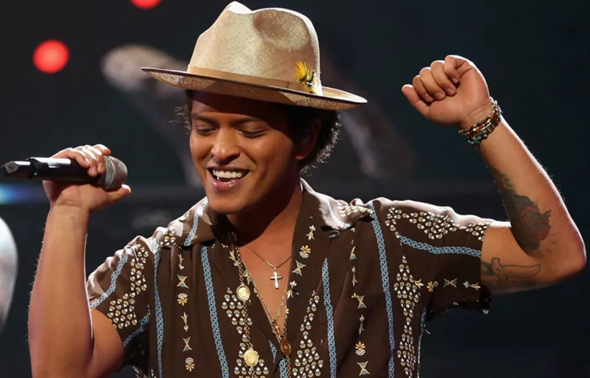

Bruno Mars
Peter Gene Hernandez, mais conhecido pelo nome artístico Bruno Mars é um cantor, compositor, produtor musical, dançarino e multi-instrumentista americano, nascido e criado no Havaí
De "Pequeno Elvis" a 31 grammys. Esse é um breve resumo da longa trajetória de Bruno Mars na música. O cantor de 37 anos vem ao Brasil pela terceira vez. E agora, para uma apresentação dupla no "The Town". Mars é a única atração principal do festival a se apresentar por duas noites no evento. O The Town acontece em São Paulo nos dias 2, 3, 7, 9 e 10 de setembro. E Bruno Mars sobe ao palco do evento nos dias 3 e 10.Bruno já foi indicado 31 ao Grammy, levando 15 estatuetas pra casa. A primeira vez, foi em 2010, quando levou a melhor na categoria "Melhor Performance Pop Vocal Masculina”. Naquele ano, ele tinha sido indicado em outras seis categorias. E a mais recente delas, foi no ano passado. Só que dessa vez, Bruno não estava sozinho. Ele foi premiado junto a Anderson .Paak, com quem uniu forças no projeto Silk Sonic. O duo acabou levando o prêmio em três categorias, incluindo as de canção e de gravação do ano.